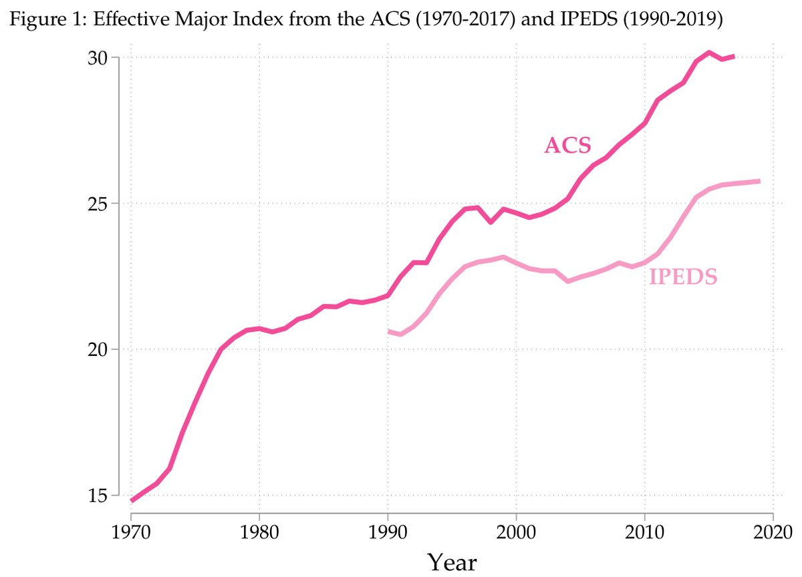

Working Paper
The Diversification of Baccalaureate Education
This paper identifies a decades-long trend in 4-year postsecondary education in the United States — the production of bachelor's degrees has diversified significantly and consistently by field of study. I document this pattern in multiple data sources and show that secular within-college expansion of majors drives this trend. Peer institution effects, or colleges' tendency to identify with and aspire to other colleges, offers the most consistent explanation for the market's collective accommodation of increasing demand for a bachelor's degree since 1990.
